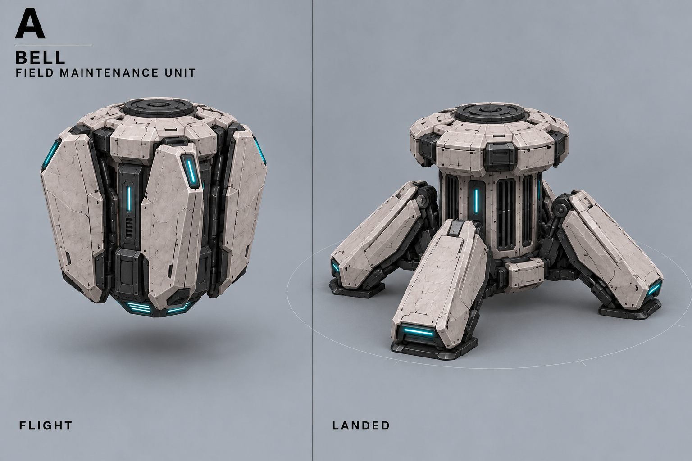
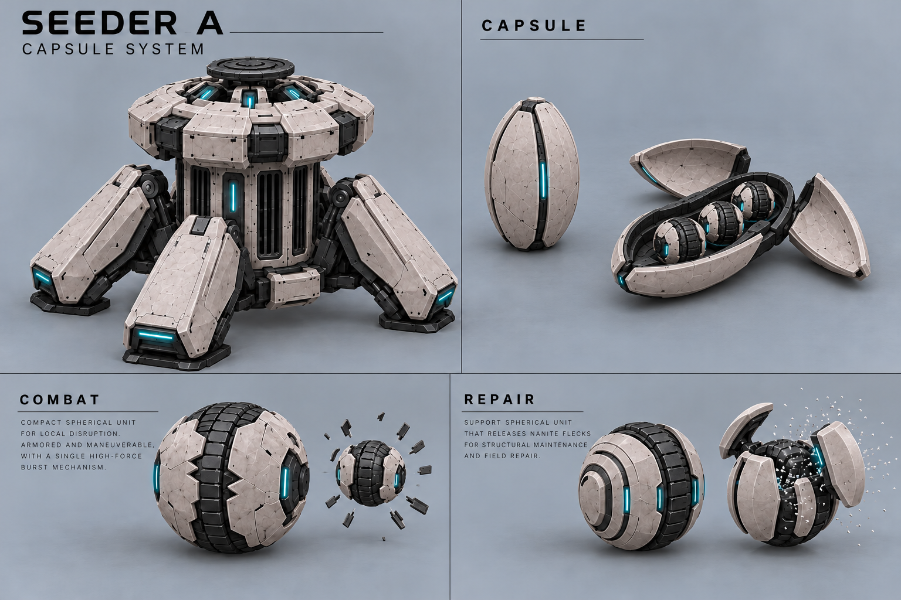
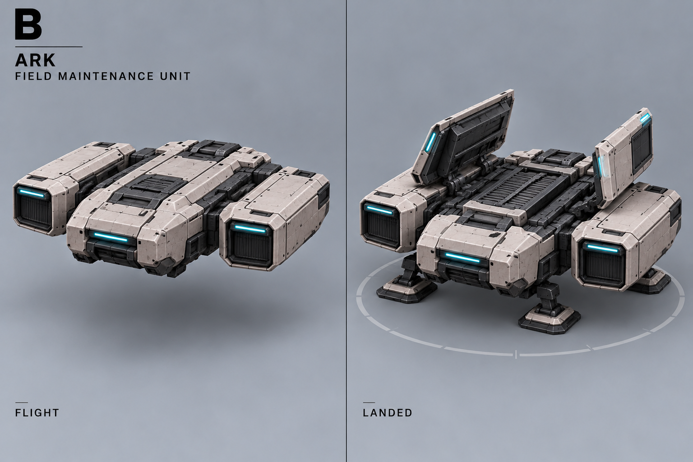
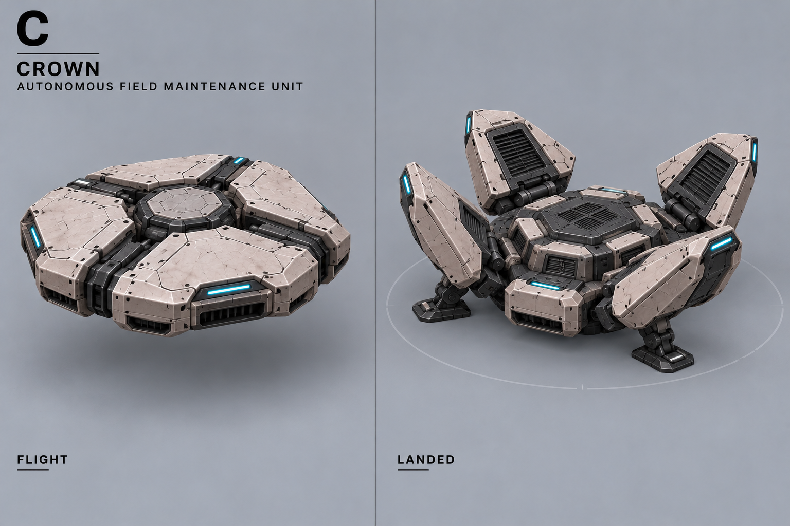
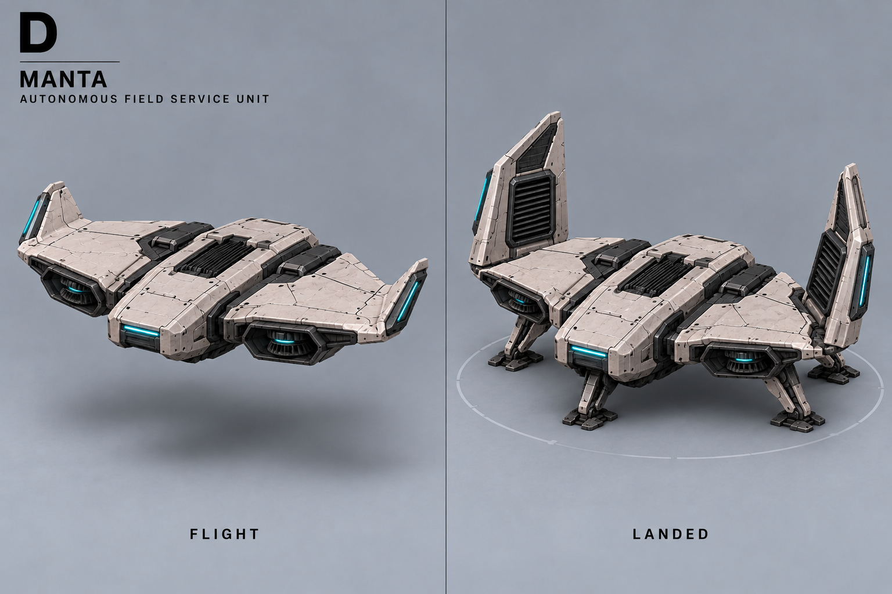
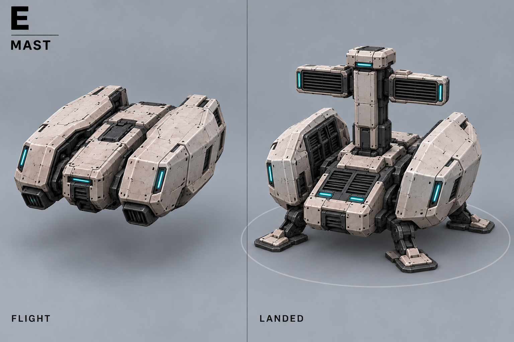
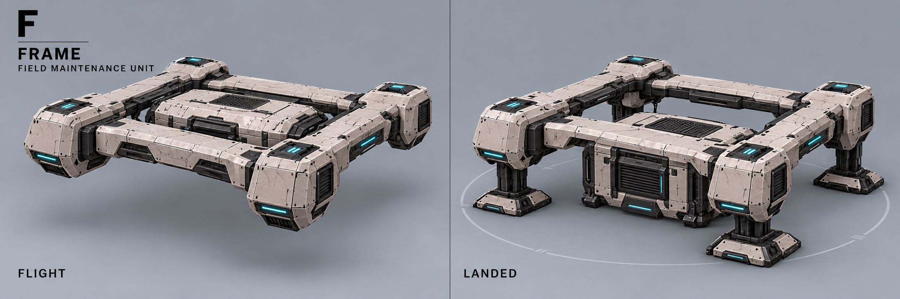

A — Колокол
Вертикальная капсула; четыре панели раскрываются в неподвижные опоры.

Новая роль: 3–4 капсулы доставляют контактные шарики-гранаты. После исследования доступен лечебный режим. Старое сервисное поле отменено.
Описание и открытые вопросы · Все концепты
Новые детали для обсуждения: выходы под кольцом, транспортная капсула, боевой и лечебный шарики. Число шариков и масштаб на листе условны. Механизм подачи ещё нужно проверить.

Предложение запуска и боеприпасов показано выше; ещё не утверждено. Посадка для атаки пока не утверждена. Проекции требуют 3D-проверки.

Надписи про обслуживание и круг поля на старых листах устарели.
Вертикальная капсула; четыре панели раскрываются в неподвижные опоры.

Летающий контейнер с боковыми двигателями и раскрывающимися крышками.

Низкий диск с четырьмя раскрывающимися секторами.

Короткое широкое крыло; после посадки законцовки поднимаются.

Компактная капсула с выдвижной сервисной мачтой.

Летающая рама; центральный сервисный блок опускается к земле.
